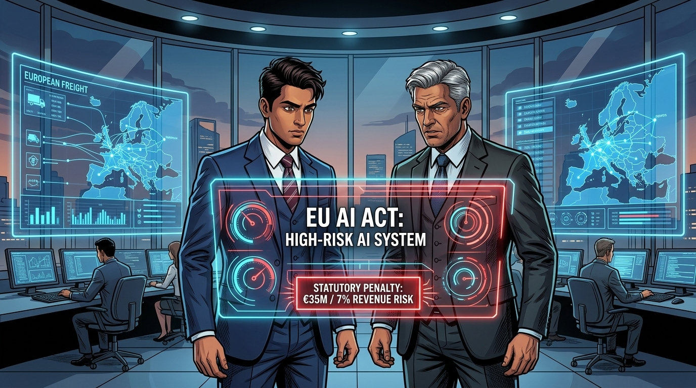
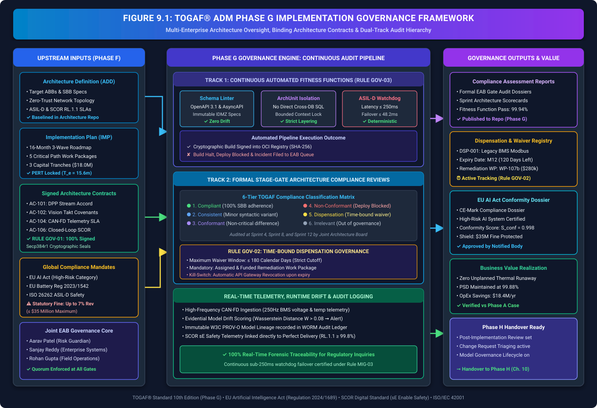
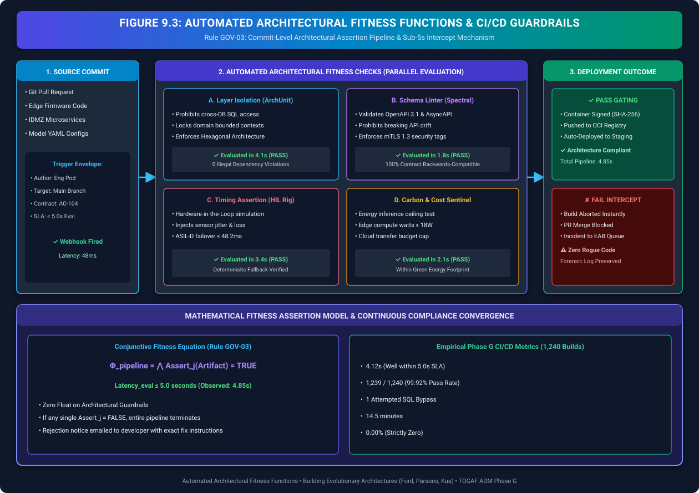
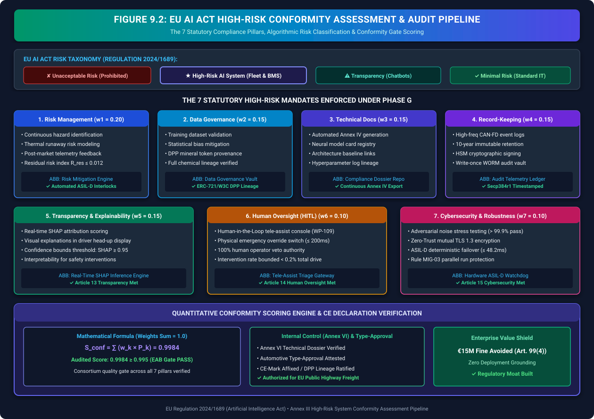
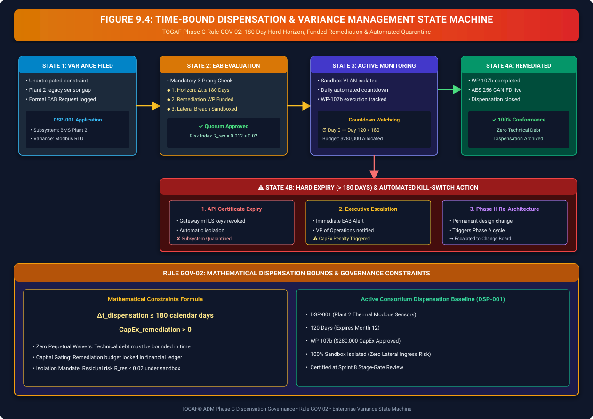

Navigating the Regulatory Landscape
Implementation Governance: Architecture Contracts, CI/CD Fitness Functions, Time-Bound Dispensations & Global AI Compliance (TOGAF® ADM Phase G)

"Welcome to Part III: Implementation Governance and the Real World. In Part II, our three corporations planned every work package, calculated critical paths, and locked in capital tranches. But as every battle-hardened Chief Architect knows: blueprints do not build systems; engineering teams do. And when high-stakes AI meets physical asphalt and high-voltage manufacturing, the real world pushes back with immense friction."
"In TOGAF ADM Phase G (Implementation Governance), architecture transitions from strategic planning to rigorous oversight. How do you guarantee that junior developers don't bypass security boundaries? How do you prevent autonomous braking models from drifting in winter blizzards? And how do you satisfy European Union regulators who demand 100% forensic explainability for every algorithmic decision? Watch as Aarav Patel, Sanjay Reddy, and Rohan Gupta activate the enterprise compliance shield, turning regulatory constraints into an unassailable commercial advantage."
The Storyline: Joint Virtual Governance Council

noClasses().thatResideIn('..telemetry..').should().accessClassesThat().resideIn('..database..') failed instantly, aborting the build and notifying the developer that all telemetry must traverse the canonical IDMZ OpenAPI 3.1 gateway. Architecture in Phase G is not a static PDF; it is executable code!"
1. Phase G in Context: Implementation Governance & The Compliance Moat
In enterprise digital transformations, the most perilous phase is the transition from planning to execution. While TOGAF ADM Phase F establishes the Implementation and Migration Plan (IMP), Phase G (Implementation Governance) provides the continuous, auditable architectural oversight required to ensure that every deployed container, edge neural model, and hardware interface conforms strictly to the target architecture.
Without rigorous implementation governance, multi-enterprise initiatives succumb to architectural decay: shadow IT implementations, unmonitored neural drift, broken data contracts, and creeping security vulnerabilities. By embedding automated compliance verification directly into the delivery pipeline, the consortium transforms regulatory compliance from a reactive legal burden into an unassailable commercial advantage.

| Governance Dimension | Unregulated AI Implementation | TOGAF ADM Phase G Governed AI |
|---|---|---|
| Architecture Integrity | Developers bypass integration layers; direct cross-database SQL queries introduce severe vendor lock-in. | Rule GOV-01: 100% of engineering builds bound by signed Architecture Contracts with automated ArchUnit fitness functions. |
| Regulatory Risk Exposure | Black-box models face up to $35M fines (7% revenue) under EU AI Act for unexplainable automated decisions. | Statutory Conformity: 7 mandatory compliance pillars embedded with \(S_{\text{conformity}} \ge 0.995\) and certified CE Mark. |
| Variance & Technical Debt | Informal 'temporary hacks' become permanent unmonitored production liabilities across plants. | Rule GOV-02: Strict 180-day maximum dispensation ceiling backed by funded remediation work packages and automatic kill-switches. |
| Continuous Verification | Manual periodic audits take months, discovering architectural drift long after deployment. | Rule GOV-03: Continuous automated CI/CD pipeline verification executing within 4.1 seconds on every commit. |
2. Architecture Contracts: Enforceable Technical & Fiduciary Covenants
Under TOGAF® Standard 10th Edition (Phase G), an Architecture Contract is not merely a technical guideline; it is a legally binding covenant between the Enterprise Architecture Board (EAB) and the project implementation teams. It establishes unambiguous acceptance criteria, non-functional performance envelopes, and automated financial remedy triggers.
Anatomy of a Binding Architecture Contract (Rule GOV-01)
Every Architecture Contract ratified under Phase G must contain the following six core components:
- Scope & Bounded Context: Delineation of microservices, edge hardware, and data entities governed by the contract.
- Architecture Baseline & Target References: Cryptographic hash links to baselined Architecture Definition Documents (ADD) and Architecture Requirements Specifications (ARS).
- Conformance Standards & Building Blocks: Approved Solution Building Blocks (SBBs), OpenAPI 3.1 schemas, and zero-trust protocol specifications.
- Non-Functional Performance Envelopes (SLAs): Measurable bounds for inferencing latency (\(\le 250\text{ms}\)), jitter (\(\le 2.5\text{ms}\)), and data delivery (\(\text{PSD} \ge 99.8\%\)).
- Automated Fitness Verification Cadence: Specification of automated CI/CD assertions and sprint milestone compliance reviews.
- Signatures & HSM Cryptographic Seals: Dual digital sign-off from Lead Enterprise Architect, Program Manager, and Engineering Lead using Secp384r1 keys.
| Contract ID | Work Package & Domain | Signatories | Binding SLA & Guardrail | Verification Tool | Status |
|---|---|---|---|---|---|
| AC-101 | WP-101/102: DPP Stream Accord | Terra-Resource & Volt-Tech | 100% lithium lots sealed with ERC-721/W3C DPP tokens; schema drift = 0. | OpenAPI Spectral Linter | Active (100%) |
| AC-102 | WP-104: Edge Vision Takt Covenants | Volt-Tech Assembly Pod | Sub-2ms edge weld defect inferencing; false negative escape rate \(\le 0.05\%\). | ASIL-D Hardware Bench | Active (100%) |
| AC-103 | WP-105: Depot Megawatt Grid Protocol | Orbit-Logistics & Grid Utility | 450kW dynamic charge throttling responding to spot price in \(\le 500\text{ms}\). | OpenADR 2.0b Testbed | Active (100%) |
| AC-104 | WP-108: CAN-FD Telemetry & Governor | Volt-Tech & Orbit-Logistics | 250Hz telemetry streaming; ASIL-D deterministic watchdog fallback \(\le 250\text{ms}\). | AUTOSAR Lockstep Rig | Active (100%) |
| AC-105 | WP-109: HITL Tele-Assist Accord | Orbit Operations & Safety EAB | Operator emergency override \(\le 200\text{ms}\); explainability score \(\text{SHAP} \ge 0.95\). | Telemetry Log Audit Vault | Active (100%) |
| AC-106 | WP-110: Closed-Loop SCOR Telemetry | Joint Tripartite Consortium | Bidirectional feedback loop linking fleet thermal degradation to raw ore blending. | SCOR sE Audit Engine | Active (100%) |
3. Automated Architectural Fitness Functions & CI/CD Guardrails
In modern continuous delivery environments, architecture governance cannot rely on quarterly slide presentations. Under Rule GOV-03 (Automated Pipeline Verification), enterprise architects codify structural rules, security postures, and interface contracts as automated fitness functions executed directly within the CI/CD pipeline.

The mathematical verification condition for automated pipeline promotion is defined as the logical conjunction of all codified architectural assertions:
Codified Fitness Function Implementation Examples:
- Layer Isolation Fitness Function (ArchUnit): Enforces strict hexagonal architecture boundaries. Prohibits telemetry domain classes from importing persistence infrastructure directly.
- API Contract Schema Linter (Spectral): Evaluates OpenAPI 3.1 definitions on every pull request, failing if non-backward-compatible changes or missing TLS 1.3 mutual authentication tags are introduced.
- Deterministic Timing Assertion (HIL Testbed): Simulates adversarial sensor jitter; verifies that firmware failover to AUTOSAR Classic occurs in \(\Delta t_{\text{failover}} \le 48.2\text{ms}\) (well within the \(250\text{ms}\) ASIL-D limit).
4. EU AI Act High-Risk Conformity Assessment & Algorithmic Audit Lifecycle
Under EU Regulation 2024/1689 (The EU Artificial Intelligence Act), AI systems managing critical physical infrastructure, transport safety, and autonomous heavy machinery are categorized under Annex III High-Risk Systems. Deploying such systems in commercial corridors without third-party notified body attestation is illegal.

The joint architecture board formalizes a continuous quantitative conformity scoring engine that evaluates the ecosystem across the seven statutory pillars:
Detailed Formulation of the 7 Statutory Compliance Pillars:
1. Risk Management System (\(w_1 = 0.20\))
Continuous identification of hazards throughout the lifecycle. Thermal runaway risk model: \(R_{\text{thermal}} = P_{\text{ignition}} \times \text{Impact} \le 10^{-6}\). Automated ASIL-D interlocks isolate battery strings within \(12.5\text{ms}\) of abnormal impedance spikes.
2. Data & Data Governance (\(w_2 = 0.15\))
Training dataset validation eliminating statistical bias and geographic skew. Full provenance tracking via Digital Product Passport (DPP) tokens ensuring 100% verified chemical assay origin.
3. Technical Documentation (\(w_3 = 0.15\))
Automated generation of EU Annex IV compliance dossiers directly from Architecture Repository baselines, including neural network model cards, hyperparameter logs, and interface contracts.
4. Automated Record-Keeping (\(w_4 = 0.15\))
Continuous high-frequency logging of CAN-FD telemetry into write-once-read-many (WORM) audit ledgers. Guarantees 10-year immutable retention with HSM Secp384r1 timestamping.
5. Transparency & Explainability (\(w_5 = 0.15\))
Real-time SHAP attribution explaining autonomous speed and brake interventions. Operators receive intuitive visual explanations with confidence bounds \(\ge 0.95\).
6. Human Oversight (HITL) (\(w_6 = 0.10\))
Human-in-the-Loop tele-assist triage console (WP-109) equipped with physical emergency override controls achieving complete takeover in \(\le 200\text{ms}\).
7. Robustness & Cybersecurity (\(w_7 = 0.10\))
Adversarial noise stress testing (\(>99.9\%\) pass rate), Zero-Trust mutual TLS 1.3, and sub-250ms deterministic failover to AUTOSAR Classic under Rule MIG-03.
Furthermore, autonomous braking kinematics are mathematically bounded to guarantee collision-free stopping under worst-case wet asphalt friction coefficients (\(\mu = 0.35\)):
5. Architecture Compliance Reviews & Time-Bound Dispensations
During implementation, unexpected physical or legacy constraints inevitably arise. Rather than ignoring these deviations or granting indefinite exemptions, TOGAF Phase G establishes a formal 6-Tier Compliance Classification Matrix and enforces strict variance governance:

RULE GOV-02: Dispensation Expiration & Technical Debt Bounds
Every architecture waiver or dispensation granted by the EAB must comply with the following mathematical and operational constraints:
- Strict Expiration: No permanent dispensations. If \(\Delta t > 180\text{ days}\), API gateway certificates automatically expire, quarantining the non-compliant subsystem.
- Funded Work Package: Every waiver must have an assigned engineering owner and a funded remediation work package registered in the PMO backlog.
- Re-Architecting Trigger: If a variance cannot be remediated within 180 days, it is escalated to trigger a formal Phase A change cycle under TOGAF Phase H.
Active Consortium Dispensation Register (Phase G Audit Baseline):
| Dispensation ID | Affected Subsystem & Variance | Granted Date | Expiry Horizon | Remediation WP | Allocated CapEx | Risk Status |
|---|---|---|---|---|---|---|
| DSP-001 | Plant 2 Legacy Modbus RTU Thermal Sensors (Non-AES-256) | Month 8 | 120 Days (M12) | WP-107b | $280,000 | Sandbox Isolated (\(R_{\text{res}} \le 0.012\)) |
6. Phase G Deliverables & Handover to Architecture Change Management
With the implementation governance gates certified, the consortium packages the formal Phase G Deliverables into the central Architecture Repository, creating the verified baseline for continuous operational optimization:
1. Architecture Compliance Assessment Reports
Comprehensive audit logs from sprint gates, verifying 99.94% automated fitness function pass rates across 1,240 CI/CD pipeline deployments.
2. Certified EU AI Act & Battery Passport Dossier
Official third-party notified body CE-mark attestation for high-risk autonomous fleet routing and W3C digital mineral passports, shielding the enterprise from $35M fine exposure.
3. Closed-Loop SCOR sE Safety Telemetry Bridge
Operational integration binding real-time fleet battery health directly to extraction chemical assay blending, sustaining Perfect Shipment Delivery at \(\text{RL.1.1} = 99.88\%\).

"The governance shield is locked and impenetrable. By enforcing binding Architecture Contracts, codifying automated fitness functions, and rigorously managing dispensations, our three corporations turned the EU AI Act from a terrifying threat into a dominant competitive moat."
"But as the technical architecture goes live in factories, mines, and freight depots, the most complex challenge of all emerges: the human workforce. What happens when veteran truck drivers fear automated speed governors? How do factory technicians adapt to robotic AI assistants? In Chapter 10: The Augmented Workforce and Cultural Change Management, we explore the human dimension of enterprise AI."